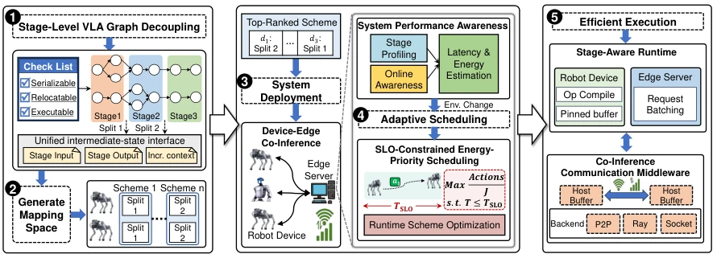
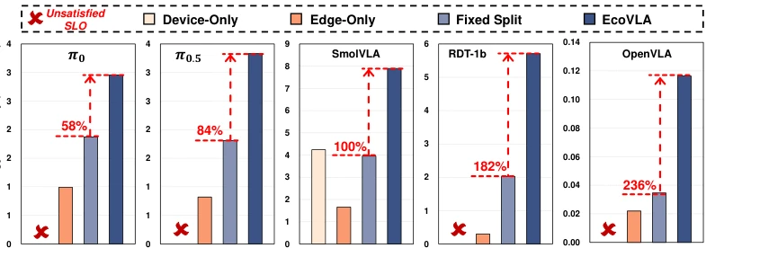
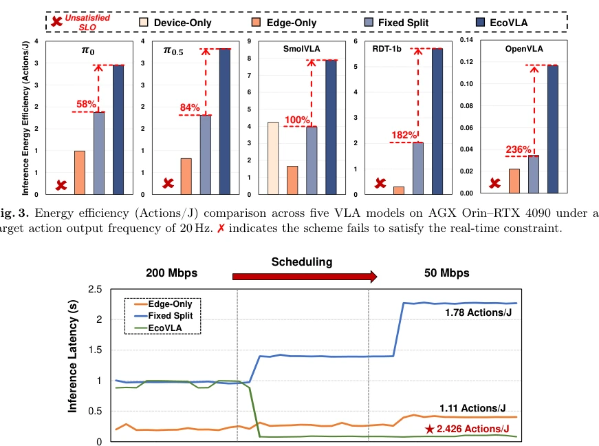
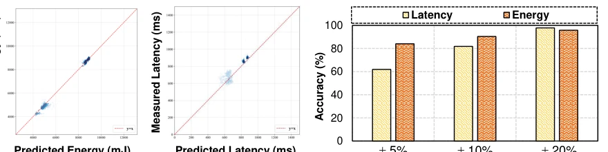

This paper casts a cold shower on the deployment of VLA models on robots: speed alone is useless; energy efficiency is also required. The authors developed EcoVLA, attempting to establish a "collaboration" between the device side and the edge side. The highlight is that finally someone treats "actions per joule" as a core metric, rather than simply competing on latency. After all, robots do not charge themselves when they run out of power. However, the so-called "architecture-agnostic" sounds quite nice, but in actual implementation, the intermediate state transfer protocols for different VLAs are estimated to be another nightmare. Moreover, with so many layers of abstraction added for scheduling optimization, can the millisecond-level overhead really be ignored? Although the experimental data is impressive, it was only run on the Jetson + RTX combination; will it remain this stable when switched to worse edge devices? Overall, it is a good system optimization idea, but do not expect it to solve the fundamental problem of the VLA model itself being bloated.
Although VLA models are powerful, the computational cost is too high; running OpenVLA on Jetson Orin results in latency exceeding 1 second, fundamentally failing to reach the 10Hz control frequency [6]. Pure device-side inference is limited by the computational ceiling, while pure edge-side inference is affected by network fluctuations and prone to timeouts [1,6]. Existing device-edge collaborative inference research mostly targets LLMs, focusing on throughput rather than real-time constraints [20,11,18]. More critically, in robot control, inference speed is not the only metric; system-level energy efficiency (Actions/J) is more important due to the existence of structural idle time [14]. Existing methods lack a unified design space to support heterogeneous VLA paradigms (such as autoregressive and diffusion models), and static strategies cannot adapt to dynamic network environments [4]. Therefore, a collaborative framework is needed that can adapt in real-time and balance SLO with energy efficiency.
The overall EcoVLA workflow is divided into unified design space construction, system performance awareness, adaptive scheduling, and efficient execution. First, the heterogeneous VLA computation graph is decoupled into stage-level Directed Acyclic Graphs (DAGs), defining serializable, migratable, and independently executable stages to shield differences between autoregressive and diffusion models [Fig 2]. Second, a joint latency-energy prediction model is established, combining offline stage profiling with online network/load sensing to estimate end-to-end latency and energy efficiency [Fig 5]. The scheduler, under the premise of satisfying SLO (e.g., 20Hz), prioritizes selecting the most energy-efficient scheme; if not feasible, it minimizes latency [Fig 2]. Finally, a lightweight transmission mechanism is used to reduce intermediate tensor communication overhead, maintaining stage boundaries and batching opportunities at runtime to ensure scheduling decisions are executable. This framework does not rely on specific models but achieves adaptive deployment through a unified interface and dynamic programming.
Experiments were conducted on a Jetson AGX Orin and RTX 4090 device-edge platform, testing 5 VLA models including OpenVLA and π0 [Fig 3]. Baselines include Device-Only, Edge-Only, and Fixed Split [4]. Metrics include Actions/J energy efficiency and SLO satisfaction rate (20Hz). Results show that under satisfied real-time constraints, EcoVLA improves energy efficiency by up to 236% (OpenVLA), far exceeding the fixed split baseline. Network fluctuation tests indicate that EcoVLA can dynamically adjust strategies to maintain stable latency, whereas the fixed split suffers severe performance degradation [Fig 4]. The prediction model accuracy reaches up to 95% (within ±20% error) [Fig 5]. Ablation studies reveal that dynamic scheduling adapts better to load changes than static splitting, and the energy-efficiency-first strategy significantly reduces energy consumption within the SLO-allowed range.

Fig. 2 shows an overview of the proposed EcoVLA framework, which addresses the above challenges in a unified manner. EcoVLA first constructs a unified stage-level co-inference design space that decou- ples heterogeneous VLA paradigms into a common executable graph and mapping space. On top of this abstraction, a system performance awareness module jointly estimates the end-to-end latency and energy efficiency of candidate schemes by combining offline stage-level profiling with online network and edge workload sensing. Guided by these estimates, an SLO-constrained energy-priority scheduler continuously selects the most energy-efficient scheme from the SLO-feasible set under changing runtime conditions. Finally, with a stage-aware runtime and a lightweight co-inference communication middle-

Fig. 3. Energy efficiency (Actions/J) comparison across five VLA models on AGX Orin–RTX 4090 under a target action output frequency of 20 Hz. ✗indicates the scheme fails to satisfy the real-time constraint.

Fig. 4. Device-edge co-inference performance variation under network deterioration.
其他图片Other Figures

Fig. 5. Latency and energy prediction accuracy in co-inference systems.